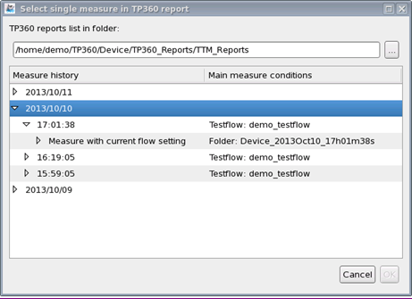
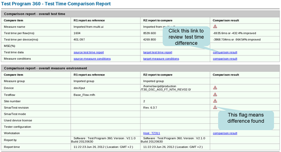
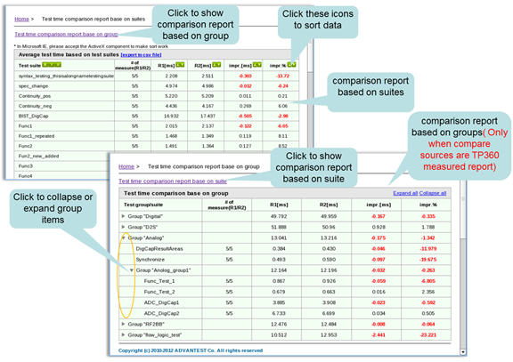

Comparing test time
Using Test Time Utilities, you can compare test time between two test time files.
About this task
You can compare two of the following test time files:
- Debug mode level 3 file.
- Event data log file.
- csv file dumped from event data log file using the "DRLExecTimes" tool.
- TP360 test time report.
Procedure
-
In this window, select two test time files for comparison.
If you select TP360 report in the Format field, the existing TP360 test time files of the current loaded device are listed in a table as displayed below. In this table, you can select either a measurement set or a measurement for the comparison.

You can also select a TP360 test time file of a different directory by clicking the
 button as seen in the screenshot above.
button as seen in the screenshot above.
Results
The comparison report is displayed in the Report view.

and the details can be viewed in this window as shown in the following:

Functional changes
- Introduced in SmarTest 7.2.2